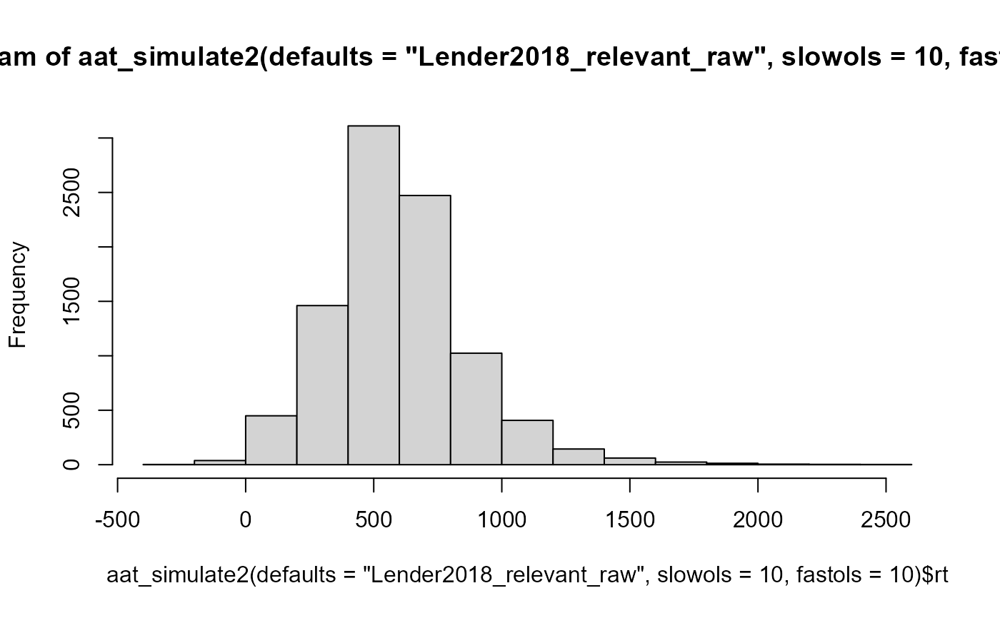

aat_simulate() generates approach-avoidance task datasets.
aat_getstudydata() retrieves the properties of datasets from a number of pre-existing studies
aat_simulate(
npps = 36,
nstims = 16,
stimreps = 4,
meanrt = 632,
meanrt_jitter = 90.1,
sdrt = 158,
sdrt_jitter = 49.9,
pullfx = -39.2,
pullfx_jitter = 40.5,
stimfx = -30.9,
stimfx_jitter = 32.5,
biasfx = 39,
biasfx_jitter = 60.1,
empirical = FALSE,
...
)
aat_simulate2(..., defaults = "none", slowols = 0, fastols = 0, olsd = 3)
aat_getstudydata()Number of participants
Number of stimuli
Number of repetitions of each stimulus within each group (i.e. within approach target, avoid target, approach control, avoid control)
Mean sample reaction time
Extent by which participants' mean RTs deviate from mean sample RT.
Standard deviation of samplewide RTs, ignoring effects of movement, stimulus, and approach bias. In essence, this represents the amount of pure noise present in the data.
Extent by which standard deviations of individual participants' RTs are larger or smaller than the samplewide SD.
size of the effect of approach-versus-avoidance, in milliseconds
Individual variation in the effect of approach-versus-avoidance
size of the effect of stimulus category, in milliseconds
Individual variation in the effect of stimulus category
Size of the approach bias effect, in milliseconds
Individual variation in the approach bias effect
If TRUE, then effect sizes and standard deviations will be exact
Any parameters of aat_simulate provided here will override the defaults
from the defaults parameter.
Which set of default values should be used?
Number of slow outliers to insert per participant
Number of fats outliers to insert per participant
Number of standard deviations by which (slow) outliers deviate
aat_simulate() returns a data.frame with the following columns:
subj (participant ID), stim (stimulus number), rep (stimulus repetition number),
is_pull (0 = avoid, 1 = approach), is_target (0 = control stimulus, 1 = target stimulus),
meanrt (participant's mean RT), sdrt (participant's residual standard deviation),
pullfx (participant approach-avoidance effect size in ms),
stimfx (participant stimulus category effect size in ms),
biasfx (participant approach bias effect size in ms),
and rt (trial reaction time).
Additionally, the data.frame has the attribute population_reliability which represents
the expected reliability of the data given the provided parameters.
Defaults of aat_simulate() are based on
Kahveci, Van Alebeek, Berking, & Blechert (2021).
"Lender2018" parameters are taken from the relevant-feature AAT of Lender, Meule, Rinck, Brockmeyer, & Blechert (2018). "Kahveci2021" parameters are taken from Kahveci, Van Alebeek, Berking, & Blechert (in review).
Lender, A., Meule, A., Rinck, M., Brockmeyer, T., & Blechert, J. (2018). Measurement of food-related approach–avoidance biases: Larger biases when food stimuli are task relevant. Appetite, 125, 42-47.
Kahveci, S., Van Alebeek, H., Berking, M., & Blechert, J. (in review). Touchscreen based assessment of food approach biases: investigation of reliability and stimulus-specific effects.
ts<- aat_simulate(pullfx = 50, stimfx = 10, biasfx = 100)
mod<-lm(rt~is_pull*is_target,data=ts)
coef(mod) #these should be somewhat close to the provided coefficients
#> (Intercept) is_pull is_target is_pull:is_target
#> 580.33945 114.49482 52.36634 -103.10536
# Here's how one might derive the parameters used in this function from a real dataset
if (FALSE) {
mod<-lmer(decisiontime ~ is_pull * is_food + (is_pull * is_food | subjectid),data=dsa)
fixef(mod) # from here, all the fx and mean RTs are derived
ranef(mod)$subjectid %>% apply(2,sd) #from here, all the fx jitters are derived
dsa %>% group_by(subjectid) %>% summarise(sd=sd(resid)) %>%
summarise(m=mean(sd),s=sd(sd)) # from here, sdrt_jitter is derived
}
hist(aat_simulate2(defaults="Lender2018_relevant_raw",slowols=10,fastols=10)$rt)
